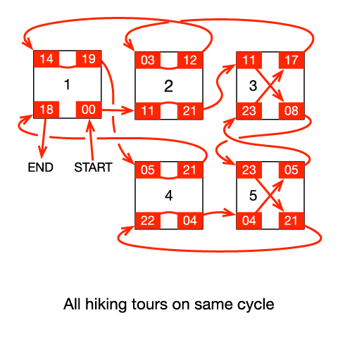

Code Jam 2017 - Round 3
Analysis: Mountain Tour
Mountain Tour: Analysis
Small dataset
Since each hiking tour can be taken only once, each of the hiking tours arriving at a camp must be followed by a different departing tour. Since each camp has two arriving and two departing tours, there are exactly two ways to “pair” the hiking tours at a camp: the first arrival with the first departure (and the second arrival with the second departure), or the first arrival with the second departure (and the second arrival with the first departure). We can think of a candidate solution as specifying this boolean decision for each camp. The total duration is the sum of each hiking trip's duration and the amount of time waiting at each camp.
When evaluating a possible solution, you must check whether or not every hiking tour is present on the path beginning with your start hike. It is possible for a path through the graph to represent a cycle with fewer than 2C edges. For example, the left side of the figure farther down on the page shows a setup with three disjoint paths through the graph.
Because the time spent waiting at the base camp is calculated differently than the time spent waiting at all other camps, the base camp needs to be handled as a special case. You could simply run the algorithm four times, once for each “start” and “end” hike.
The entire space can be explored in O(2C) time, which is sufficient for the Small dataset with C ≤ 15.
Another way to look at the small dataset is as a special case of the Travelling Salesman Problem (TSP). Consider the directed graph in which each hiking tour is a node and edges are the possible pairings between hiking tours, four for each camp, with edge weights corresponding to the amount of time you would have to wait at the camp in order to make that transfer. For example, if hiking tour A arrived at node 1 at time 02:00, and hiking tour B left node 1 at time 06:00, there would be an edge from A to B with weight 4. Running TSP on this graph, again with special handling for the base camp, can also yield a correct solution.
Large dataset
Let's look more closely at the two possible arrival-departure pairings for each camp. Suppose a camp has tours arriving at 13:00 and 21:00 and tours leaving at 22:00 and 07:00, such that there are no departures between the times that the two tours arrive. If the 13:00 arrival were paired with the 22:00 departure and the 21:00 arrival were paired with the 07:00 departure, the total wait time at the camp would be (22 – 13) + ((7 – 21) mod 24) = 19 hours. If we did the other pairing, the total wait time would be (22 – 21) + ((7 – 13) mod 24) = 19 hours. Both pairings result in the same total wait time at the camp. We will call these camps the “free” camps.
Now consider a camp having tours arriving at 11:00 and 23:00 and tours leaving at 17:00 and 08:00, such that after each tour arrives, there is a tour that leaves before the other tour arrives. If the 11:00 arrival were paired with the 17:00 departure and the 23:00 arrival were paired with the 08:00 departure, the total wait time at the camp would be (17 – 11) + ((8 – 23) mod 24) = 15 hours. If we did the other pairing, the total wait time would be ((17 – 23) mod 24) + ((8 – 11) mod 24) = 39 hours, 24 hours longer than the other pairing.
We mentioned that for the small solution, you must ensure that every hiking tour is present on the path starting from the base camp. What does the graph look like if there are hiking tours that are not present on that path? It is a set of disjoint cycles. Each camp has two paths crossing through it. If those paths are on different cycles, switching the pairing of that camp will in effect merge the two cycles together.
For example, consider the following figure with 5 camps. Camps 2 and 5 are free, and camps 3 and 4 are 24-hour switches. The initial graph has 3 disjoint cycles. As it turns out, to merge all of the cycles together, it is necessary to switch the pairing of camp 5 for free and either camp 3 or camp 4 for a 24-hour penalty. Note that the red path, the one starting and ending at the base camp, does not pass through camp 5 prior to switching the pairings, but switching the pairing of camp 5 is nonetheless required.

In this initial state, wait times are minimized, but there are several disjoint cycles.
Now there is only one cycle.
Thus, to solve the problem efficiently, add each hiking tour to a Disjoint Sets data structure. Iterate through each camp. If the camp is free, union all four hiking tours connected to that camp into the same set (this is analogous to letting the free camps take either pairing); otherwise, union each arrival with only its respective departure. You will end up with one disjoint set per cycle in the graph. If there are Q > 1 disjoint sets, since all of the free camps have already been accounted for, you will need to switch the pairing of Q – 1 camps with 24-hour penalties. These Q – 1 camps are guaranteed to exist. The base camp still needs special handling; you can afford to run the algorithm once for each of the four possible start and end hikes. The total duration is the sum of all the hiking tour durations plus the lowest waiting time at each camp plus 24 hours for each of the Q – 1 penalties. This solution takes O(C α(C)) time, where α(C), the inverse Ackermann function, is the amortized time per operation on the Disjoint Sets data structure.